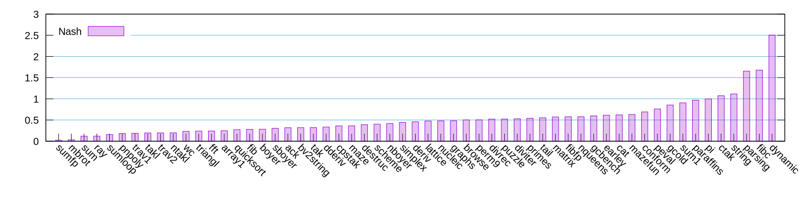
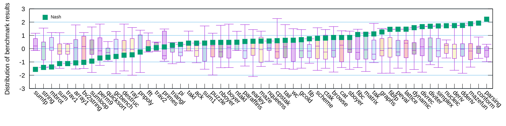

Trace: Recorded instruction sequence.
Fragment: Artifact made from a trace.
Guard: A test inserted to native code.
Guile compiles Scheme source code to bytecode
(define (mandelbrot x y)
(let ((cr (- y 0.5))
(ci x)
(zi 0.0)
(zr 0.0))
(let lp ((i 0) (zr zr) (zi zi))
(if (< *max-iterations* i)
0
(let ((zi2 (* zi zi))
(zr2 (* zr zr)))
(if (< *bailout* (+ zi2 zr2))
i
(lp (+ i 1)
(+ (- zr2 zi2) cr)
(+ (* 2.0 zr zi) ci))))))))Bytecode has flat structure.
Bytecode contains labels for jump destination.
Disassembly of mandelbrot at #x2a8: 0 (assert-nargs-ee/locals 3 9) 1 (static-ref 11 3087) 3 (sub 11 9 11) 4 (make-short-immediate 9 2) 5 (static-ref 8 3093) 7 (toplevel-box 7 3093 2925 2923 #t) 12 (box-ref 7 7) 13 (static-ref 6 3097) 15 (mov 5 8) 16 (mov 4 8) 17 (mov 8 9) L1: 18 (br-if-< 7 8 #f 26) 21 (mul 3 4 4) 22 (mul 2 5 5) 23 (toplevel-box 1 3089 2909 2897 #t) 28 (box-ref 1 1) 29 (add 0 3 2) 30 (br-if-< 1 0 #f 12) 33 (add/immediate 8 8 1) 34 (sub 3 2 3) 35 (add 3 3 11) 36 (mul 5 6 5) 37 (mul 5 5 4) 38 (add 5 5 10) 39 (mov 4 5) 40 (mov 5 3) 41 (br -23) L2: 42 (mov 10 8) 43 (return-values 2) L3: 44 (mov 10 9) 45 (return-values 2)
Compiled bytecode instructions are interpreted by a C function.
... which is called VM-engine.
VM-engine contains a huge switch ... case
statement.
static SCM
VM_NAME (scm_i_thread *thread, struct scm_vm *vp,
scm_i_jmp_buf *registers, int resume) {
...
VM_DEFINE_OP (1, call, ...) {
...
}
VM_DEFINE_OP (2, call-label, ...) {
...
}
VM_DEFINE_OP (3, tail_call, ...) {
...
}
...
}
Key components:
User programs start from the interpreter.
Interpreter observes each bytecode instruction, seeks for hot loops.
When a hot loop was detected, the interpreter looks up accompanying native code.
If no native code were found, the interpreter starts recording the instructions in the loop.
Disassembly of mandelbrot at #x2a8: 0 (assert-nargs-ee/locals 3 9) 1 (static-ref 11 3087) 3 (sub 11 9 11) 4 (make-short-immediate 9 2) 5 (static-ref 8 3093) 7 (toplevel-box 7 3093 2925 2923 #t) 12 (box-ref 7 7) 13 (static-ref 6 3097) 15 (mov 5 8) 16 (mov 4 8) 17 (mov 8 9) L1: 18 (br-if-< 7 8 #f 26) 21 (mul 3 4 4) 22 (mul 2 5 5) 23 (toplevel-box 1 3089 2909 2897 #t) 28 (box-ref 1 1) 29 (add 0 3 2) 30 (br-if-< 1 0 #f 12) 33 (add/immediate 8 8 1) 34 (sub 3 2 3) 35 (add 3 3 11) 36 (mul 5 6 5) 37 (mul 5 5 4) 38 (add 5 5 10) 39 (mov 4 5) 40 (mov 5 3) 41 (br -23) L2: 42 (mov 10 8) 43 (return-values 2) L3: 44 (mov 10 9) 45 (return-values 2)
IP 41 (br -23) is a backward jump instruction.
The interpreter jumps back to IP 18 (br-if-7 8 #f 20), which is marked as L1, the label one.
Then the interpreter records the instructions between IP 18 and 41.
Recorded trace:
;;; trace 1: bytecode 16 7f39397e92f0 (br-if-< 7 8 #f 26) 7f39397e92fc (mul 3 4 4) 7f39397e9300 (mul 2 5 5) 7f39397e9304 (toplevel-box 1 3089 2909 2897 #t) 7f39397e9318 (box-ref 1 1) 7f39397e931c (add 0 3 2) 7f39397e9320 (br-if-< 1 0 #f 12) 7f39397e932c (add/immediate 8 8 1) 7f39397e9330 (sub 3 2 3) 7f39397e9334 (add 3 3 11) 7f39397e9338 (mul 5 6 5) 7f39397e933c (mul 5 5 4) 7f39397e9340 (add 5 5 10) 7f39397e9344 (mov 4 5) 7f39397e9348 (mov 5 3) 7f39397e934c (br -23)
The recorded instructions are then passed to compiler.
Compiler is written in Scheme.
Uses A-normal form IR.
Uses GNU Lightning as assembler backend.
;;; trace 1: bytecode 16 7f39397e92f0 (br-if-< 7 8 #f 26) 7f39397e92fc (mul 3 4 4) 7f39397e9300 (mul 2 5 5) 7f39397e9304 (toplevel-box 1 3089 2909 2897 #t) 7f39397e9318 (box-ref 1 1) 7f39397e931c (add 0 3 2) 7f39397e9320 (br-if-< 1 0 #f 12) 7f39397e932c (add/immediate 8 8 1) 7f39397e9330 (sub 3 2 3) 7f39397e9334 (add 3 3 11) 7f39397e9338 (mul 5 6 5) 7f39397e933c (mul 5 5 4) 7f39397e9340 (add 5 5 10) 7f39397e9344 (mov 4 5) 7f39397e9348 (mov 5 3) 7f39397e934c (br -23)
IR contains a prologue section and a loop body section.
Prologue section loads locals from the stack, the stack is shared with the interpreter.
IR to native code compilation is done in almost straight forward manner.
;;; trace 1: anf (lambda () (let* ((_ (%snap 0)) (v0 (%sref/f 0 2)) (v2 (%sref/f 2 2)) (v3 (%sref/f 3 2)) (v4 (%sref/f 4 2)) (v5 (%sref/f 5 2)) (v6 (%sref/f 6 2)) (v7 (%sref 7 1)) (v8 (%sref 8 1)) (v10 (%sref/f 10 2)) (v11 (%sref/f 11 2))) (loop v0 v1 v2 v3 v4 v5 v6 v7 v8 v10 v11))) (lambda (v0 v1 v2 v3 v4 v5 v6 v7 v8 v10 v11) (let* ((_ (%snap 1 v0 v1 v2 v3 v4 v5 v8)) (_ (%ge v7 v8)) (v3 (%fmul v4 v4)) (v2 (%fmul v5 v5)) (v1 (%cref 15967664 1)) (v0 (%fadd v3 v2)) (_ (%snap 2 v0 v1 v2 v3 v4 v5 v8)) (_ (%typeq v1 2)) (f2 (%cref/f v1 2)) (_ (%fge f2 v0)) (_ (%snap 3 v0 v1 v2 v3 v4 v5 v8)) (v8 (%addov v8 4)) (v3 (%fsub v2 v3)) (v3 (%fadd v3 v11)) (v5 (%fmul v6 v5)) (v5 (%fmul v5 v4)) (v5 (%fadd v5 v10)) (v4 v5) (v5 v3)) (loop v0 v1 v2 v3 v4 v5 v6 v7 v8 v10 v11)))
After compilation, the control flow goes back to the interpreter.
The interpreter will find the native code of the loop from the next iteration.
Native code runs until guard fails.
Bailout code recovers VM state and pass back the control of user program to the intepreter.
IR of recorded trace
;;; trace 1: anf
(lambda ()
(let* ((_ (%snap 0))
(v0 (%sref/f 0 2))
(v2 (%sref/f 2 2))
(v3 (%sref/f 3 2))
(v4 (%sref/f 4 2))
(v5 (%sref/f 5 2))
(v6 (%sref/f 6 2))
(v7 (%sref 7 1))
(v8 (%sref 8 1))
(v10 (%sref/f 10 2))
(v11 (%sref/f 11 2)))
(loop v0 v1 v2 v3 v4 v5 v6 v7 v8 v10 v11)))
(lambda (v0 v1 v2 v3 v4 v5 v6 v7 v8 v10 v11)
(let* ((_ (%snap 1 v0 v1 v2 v3 v4 v5 v8))
(_ (%ge v7 v8))
(v3 (%fmul v4 v4))
(v2 (%fmul v5 v5))
(v1 (%cref 15967664 1))
(v0 (%fadd v3 v2))
(_ (%snap 2 v0 v1 v2 v3 v4 v5 v8))
(_ (%typeq v1 2))
(f2 (%cref/f v1 2))
(_ (%fge f2 v0))
(_ (%snap 3 v0 v1 v2 v3 v4 v5 v8))
(v8 (%addov v8 4))
(v3 (%fsub v2 v3))
(v3 (%fadd v3 v11))
(v5 (%fmul v6 v5))
(v5 (%fmul v5 v4))
(v5 (%fadd v5 v10))
(v4 v5)
(v5 v3))
(loop v0 v1 v2 v3 v4 v5 v6 v7 v8 v10 v11)))
Native code of loop body (x86-64)
;;; trace 1: ncode 624 ... loop: 0x01ee61c8 cmp r14,r15 0x01ee61cb jl 0x01efe028 ->1 0x01ee61d1 movsd xmm13,xmm14 0x01ee61d6 mulsd xmm13,xmm14 0x01ee61db movsd xmm12,xmm15 0x01ee61e0 mulsd xmm12,xmm15 0x01ee61e5 mov r9,QWORD PTR ds:0x1cac5a8 0x01ee61ed movsd xmm11,xmm13 0x01ee61f2 addsd xmm11,xmm12 0x01ee61f7 test r9,0x6 0x01ee61fe jne 0x01efe030 0x01ee6204 mov rax,QWORD PTR [r9] 0x01ee6207 and rax,0xffff 0x01ee620d cmp rax,0x217 0x01ee6213 jne 0x01efe030 0x01ee6219 movsd xmm10,QWORD PTR [r9+0x10] 0x01ee621f ucomisd xmm11,xmm10 0x01ee6224 ja 0x01efe030 ->2 0x01ee622a mov r11,r15 0x01ee622d add r11,0x4 0x01ee6231 jo 0x01efe038 0x01ee6237 mov r15,r11 0x01ee623a movsd xmm8,xmm13 0x01ee623f movsd xmm13,xmm12 0x01ee6244 subsd xmm13,xmm8 0x01ee6249 addsd xmm13,xmm5 0x01ee624e mulsd xmm15,xmm7 0x01ee6253 mulsd xmm15,xmm14 0x01ee6258 addsd xmm15,xmm6 0x01ee625d movsd xmm14,xmm15 0x01ee6262 movsd xmm15,xmm13 0x01ee6267 jmp 0x01ee61c8 ->loop ...
Total time normalized to Guile bytecode interpreter
| sumfp | mbrot | sum | string | parsing | fibc | dynamic | GM | |
| Nash | 0.024 | 0.034 | 0.119 | 1.115 | 1.654 | 1.678 | 2.506 | 0.400 |
"sumfp" and "mbrot" contain loops with floting point number computations.
"string" and "fibc" mostly use procedures implemented in C.
"parsing" and "dynamic" contain large amount of data-driven conditional branches.
Geometric standard scores of benchmark results from 10 Scheme native code compilers
| Chez | Bigloo | Ikarus | Pycket | Gambit | Larceny | Racket | Nash | Chicken | MIT | |
| GM | 0.148 | 0.236 | 0.244 | 0.252 | 0.274 | 0.301 | 0.324 | 0.400 | 0.448 | 0.486 |
Nash showed the best score in "string", but Guile bytecode interpreter was faster.
"parsing" was the slowest benchmark.
Significant improvement in tight loop with floating point arithmetic computations.
No need to use "fl+", "fx+", ... etc.
Not much differences in procedures implemented in C.
Not much suited for programs with large number of conditional branches, e.g.: parser, interpreter, and compiler.
JIT warming up time.